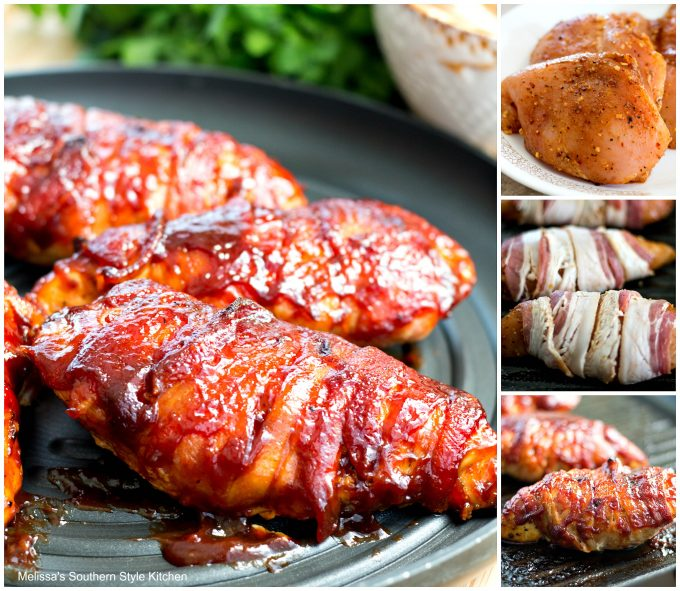

Barbeque Bacon Chicken Bake

Description:
Easy-to-make chicken with a little variation.
Great on the grill but just as good baked in the
oven when you can't grill out.
Ingredients:
- 2 teaspoons extra virgin olive oil
- cooking spray
- 2 garlic cloves (minced)
- 8 slices bacon
- 4 skinless, boneless chicken breast halves
- ¾ cup barbeque sauce (such as Cattlemen's® or Jack Daniel's®)
- Salt
Instructions:
- Preheat oven to 350 degrees F (175 degrees C).
Spray a 9x13-inch baking dish with cooking spray.
- Cook bacon in a skillet over medium heat until the edges begin to crisp,
about 5 minutes; drain bacon on paper towels. Wrap each chicken breast with
2 slices of bacon in an x-shaped pattern and place into the prepared baking
sheet with bacon ends underneath.
- Bake in the preheated oven for 30 minutes; spread barbeque sauce over chicken
breasts and bake until the juices run clear, the chicken is no longer pink inside,
and an instant-read meat thermometer inserted into the thickest part of a breast
reads at least 160 degrees F (70 degrees C), 10 to 15 more minutes.
Back to Main Page